Four series. One quality standard. Individual solutions for every sanctuary — from intimate communities to grand prayer halls.
Generations of worshippers will use this seating without noticing it — because it was designed precisely for their sanctuary. Every series can be combined in one prayer hall. Every element is available in custom dimensions.
Individual siddur compartment, flip transformer table, and lift seat for standing prayer. Built for new construction where nothing is compromised.
The versatile standard — solid or upholstered seat, wooden or metal base, open storage or flip table. Suits new and existing sanctuaries of any size.
Steel base engineered for daily high-load use. Restrained design that complements the sanctuary without competing with it.
Pure minimalist lines for spaces where simplicity and maintenance are the priority. Ideal for budget renovations and smaller communities.
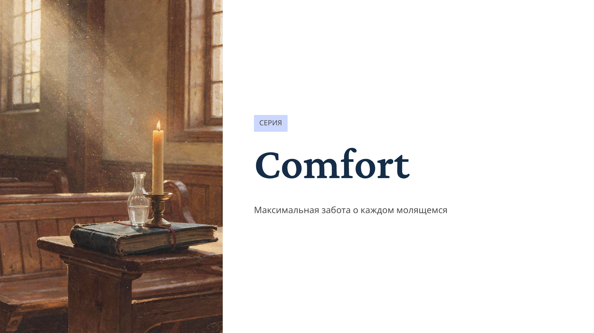
Maximum care for every worshipper
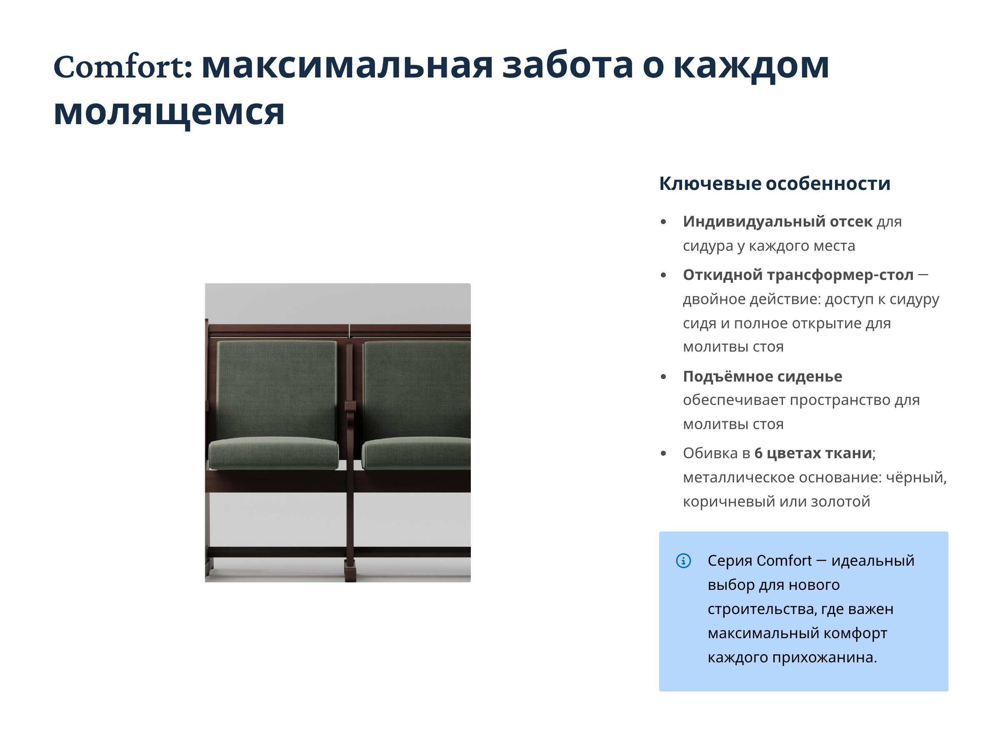
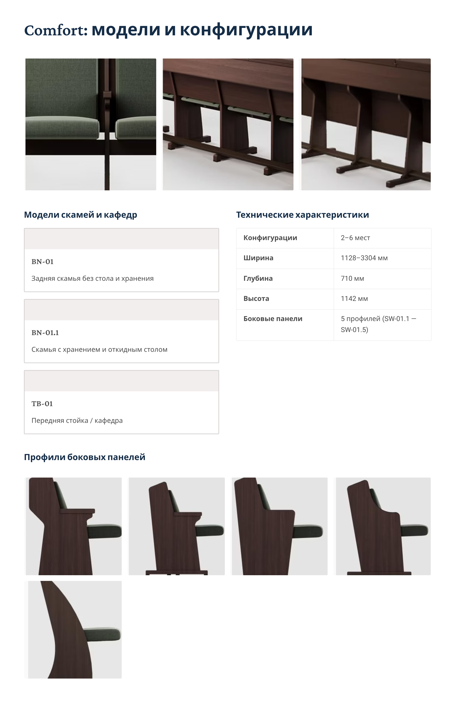
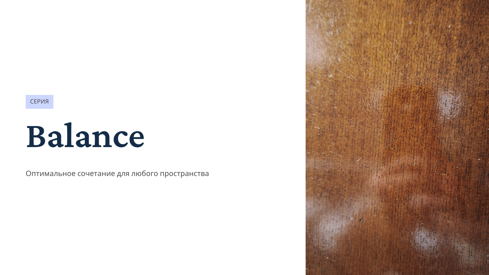
Optimal combination for any space
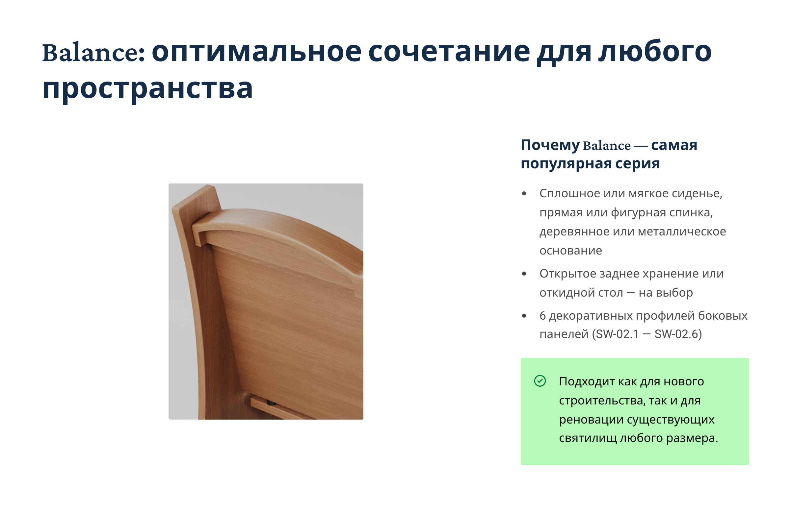
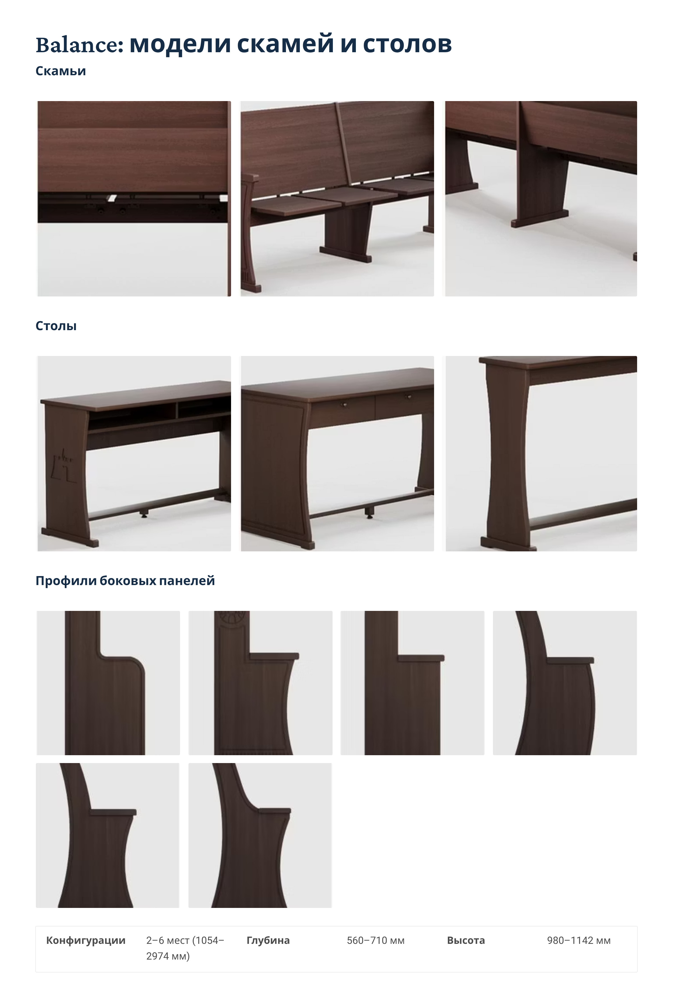
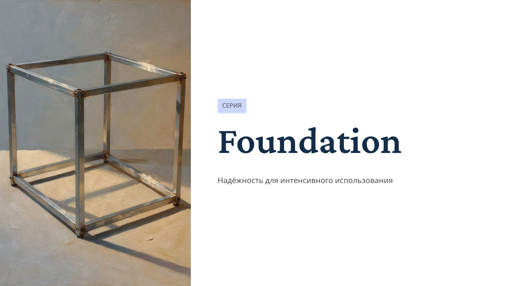
Reliability for intensive use
2–6 seats (990–2910 mm) · Depth: 560 mm
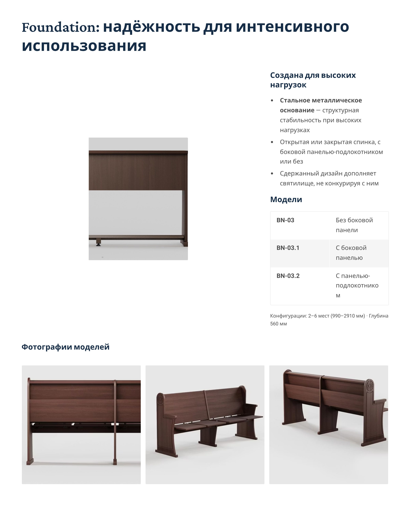
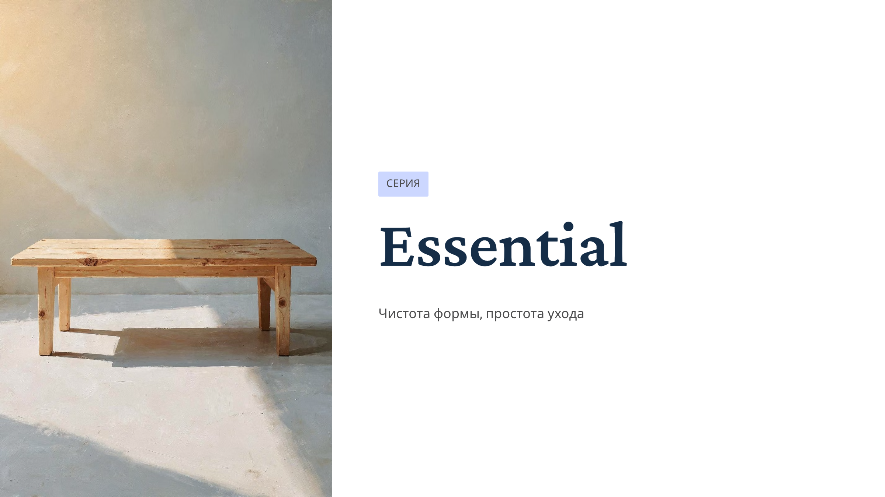
Clean form, easy care
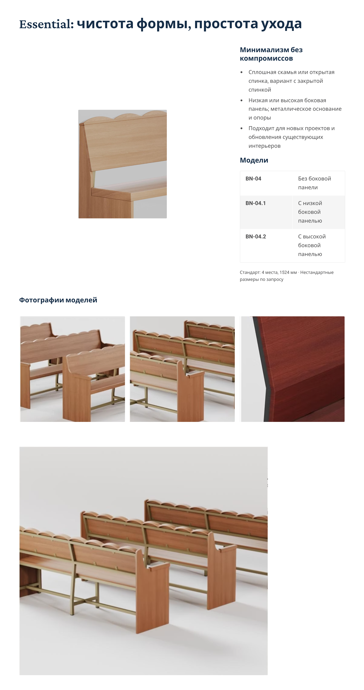
All four series can be combined in a single sanctuary. Use this guide to identify your primary series, then mix configurations as needed.
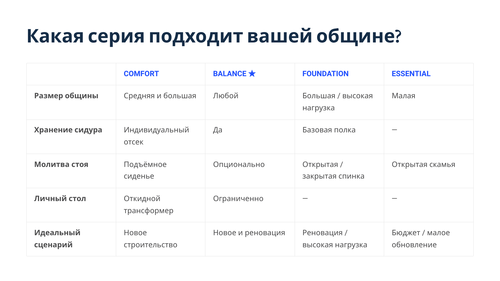
Every piece is produced to specification. Choose your wood tone, upholstery colour, metal finish, and decorative treatment — we produce a sample set before manufacturing begins.
From light birch (B-1404) to dark walnut (B-1501)
Charcoal to light beige — colour codes S100 through S08
Black · Brown · Gold
Star of David, custom ornaments, congregation name — laser-engraved on side and front panels. Each piece becomes a permanent part of your sanctuary's identity.
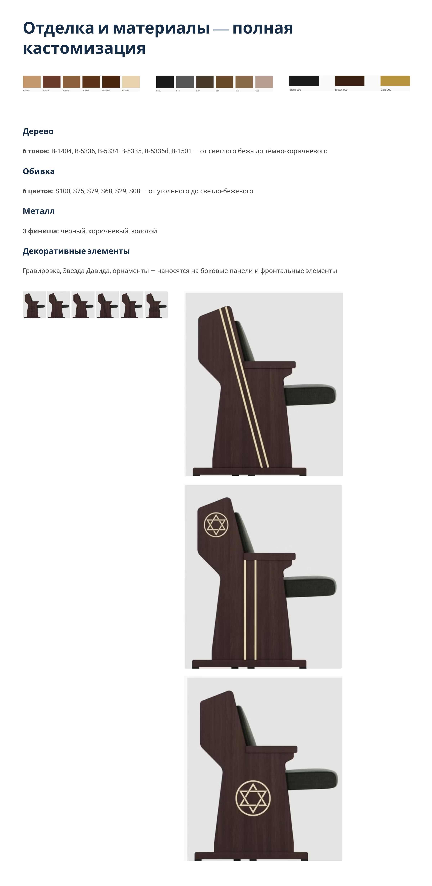
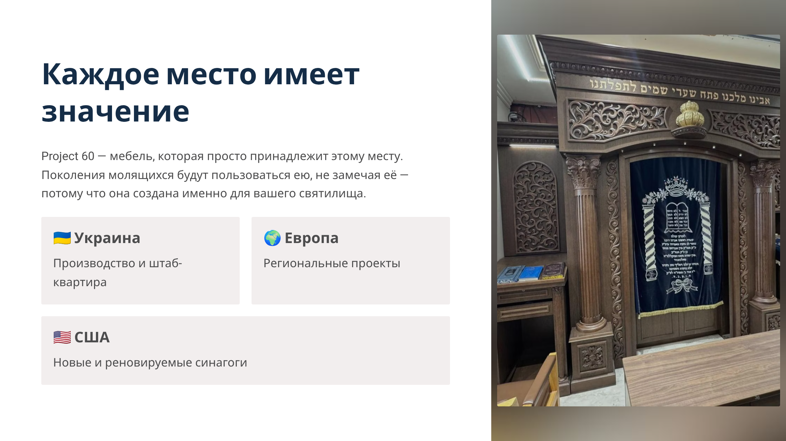
Furniture that simply belongs to this place
Generations of worshippers will sit in these seats, stand for the Amidah, open siddurim, and lean on these armrests — without ever noticing the design. That invisibility is the goal. Project 60 seating is made to feel as though it has always been there.
Share your floor plan and congregation size — we will prepare a detailed seating proposal with sample configurations, wood tone recommendations, and a full quote within 48 hours.